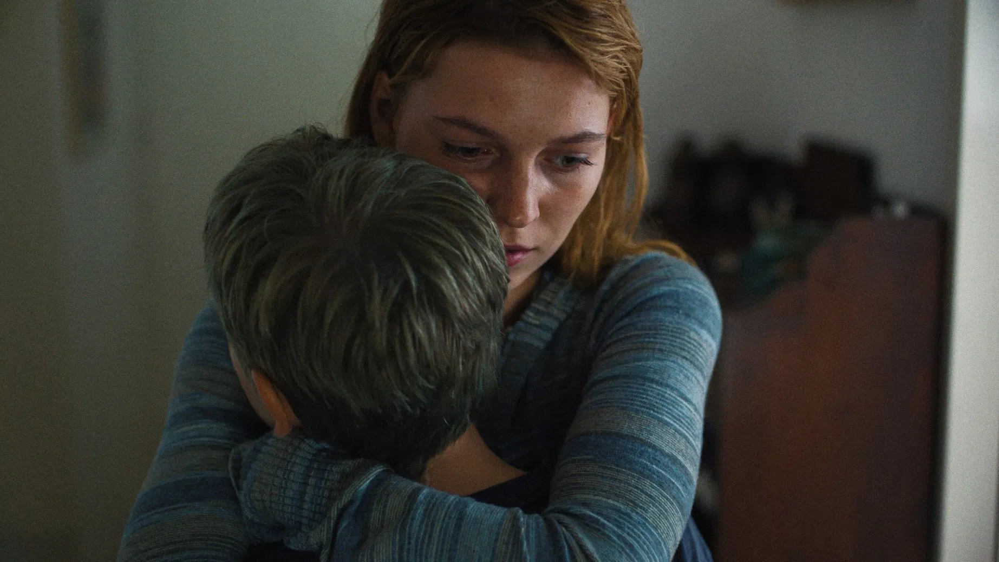

Wirkungsvoll und ehrlich zeigt A Family in drei Kapiteln, wie die Trennung der Eltern das Leben der Kinder Nina (Celeste Holsheimer) und Eli (Finn Vogels) maßgeblich verändert. Während die ersten beiden Kapitel dieselbe Zeitspanne aus jeweils einer Kinderperspektive durchlaufen, machen sie deutlich, welch immense Auswirkungen diese Last auf ihr Wohlbefinden, ihre Gefühle und die Beziehung zu ihren Freunden hat.
Bereits zu Beginn stellt eine Juristin den beiden die schwierige Frage: 'Bei wem möchtet ihr wohnen? Würde es euch stören, voneinander getrennt zu werden?' Schon dort wird klar, dass die beiden unterschiedliche Auffassungen und Ambitionen von der Beziehung zueinander haben. Der Mangel an Kommunikation verbirgt den beiden, wie ähnlich ihre Sorgen und Probleme doch eigentlich sind. Die sichtbare Überforderung der Eltern mit der neuen Situation, die durch impulsive und emotional getriebene Entscheidungen die Bedürfnisse ihrer Kinder übersehen, erschwert die Entscheidung zusätzlich. Dadurch bildet sich bei beiden die Angst, sich gegen ein Elternteil statt für das andere zu entscheiden zu müssen.
A Family überzeugt dabei nicht nur inhaltlich, sondern auch durch seine Geduld, in langen Einstellungen Szenen wirken zu lassen. Getragen wird er zudem von den fantastischen Leistungen von Celeste Holsheimer und Finn Vogels. Mit ihrer Darstellung schaffen sie es, durchgehend Emotionen auf die Leinwand zu bringen und die Zuschauer somit in die Gedanken- und Gefühlswelt der Kinder mitzunehmen. Gerade in den stillen Momenten, die auch ohne Dialog auskommen, in denen sie beobachten, leiden oder für sich rekapitulieren, zeigen sie mit scheinbarer Leichtigkeit, ihr Talent.